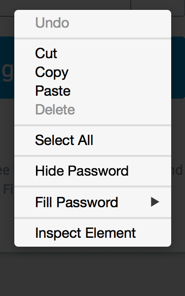
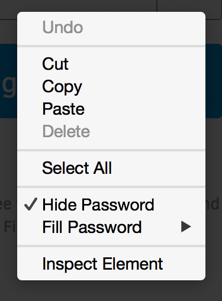
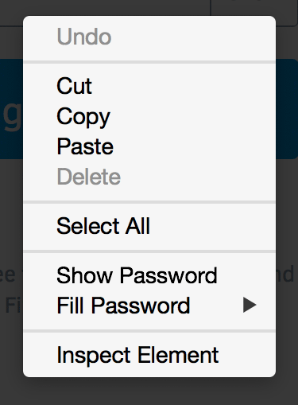
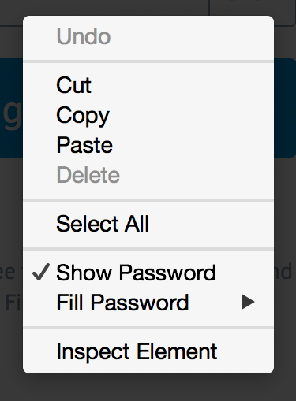

Show Password Contextual Menu Toggle
Which option, if any, is the best one to let users right-clicking on a password field unmask it?
1. Hide label, checked, bordered

2. Hide label, checked, unbordered

Hide/show label, unbordered

Show label, unchecked, unbordered
